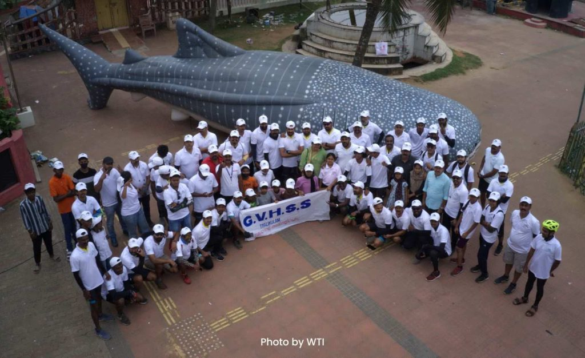
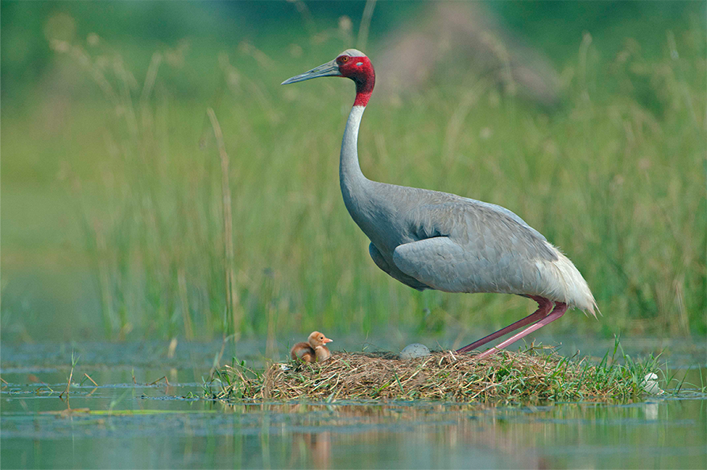
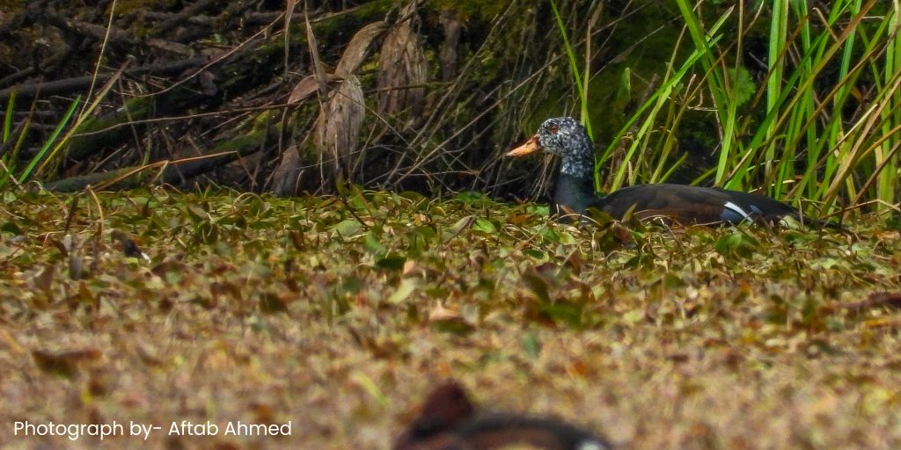
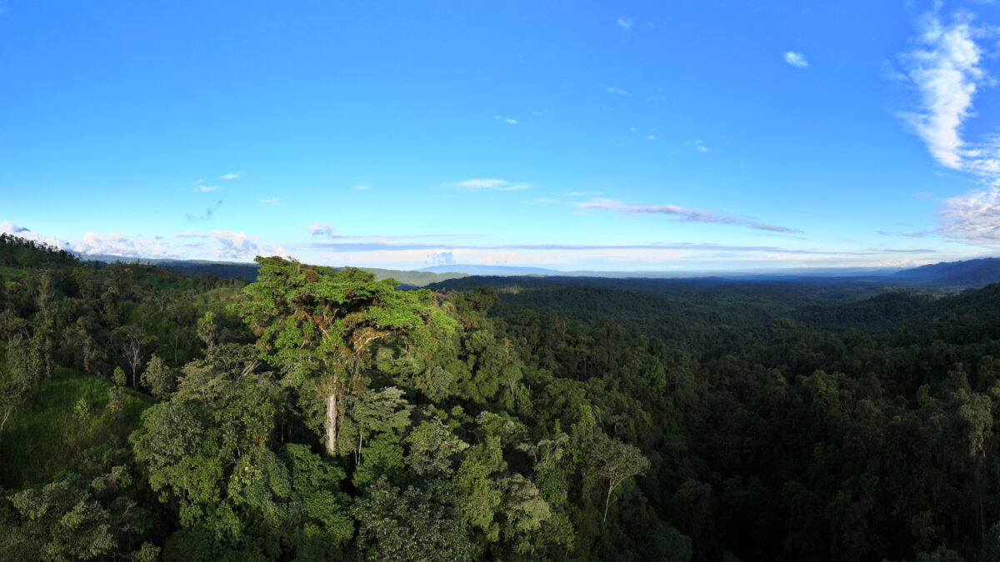
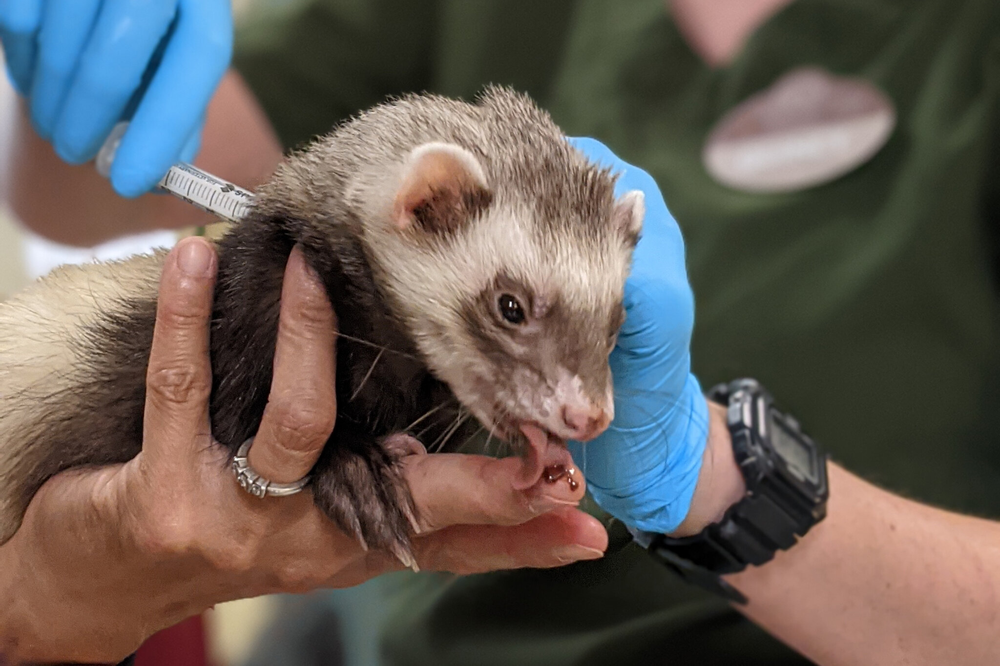

About Us
Natural Heritage Campaigns
Natural Heritage Campaigns in WTI has spanned species and has led to success like the rehabilitation of Kalandars (Bear dancing) community, the 'Say no to Shahtoosh' campaign to stop the hinting of the Tibetan Antelope, the 'Tibetan Awareness Campaign' aimed at stopping the use of wildlife products and derivatives in the culture, The 'Mongoose Hair Brush Campaign' to expose the illegal trade in mongoose hair to manufacture paint brushes, 'Animal Action Education' to bring about environmental education and awareness among school children, and the 'Wild Buffalo Campaign' to instil a sense of pride and ownership for the State Animal of Chhattisgarh.
Wild Lands
Land securement is a unique strategy that aims to secure critical habitats outside the traditional protected area system. The secured lands include important habitat linkages, wetlands, mangroves, grasslands, Important Bird Areas (IBAs), sacred groves etc. The focus of this Big Idea is to secure critical habitats and restore degraded and fragmented ecosystems like coral reefs, wetlands and mangroves. Presently, the division has five projects under it the Garo Green Spine Conservation Project, Meghalaya; Kannur Kandal Project, Kerala; Sarus Habitat Securement Project, Uttar Pradesh; Mithapur Coral Reef Recovery Project, Gujarat; and the latest addition is the Forgotten Cats of Shergaon in Arunachal Pradesh
Species Recovery
Our species recovery projects reflect long-term organisational commitment and are selected after careful thought is given to the conservation status of the species, conservation relevance of a project, resource availability, local support, and government priorities.
Wild Lands
Under the "WILD LANDS" project we go on for spotting terrestrial,aquatic animals or spotting birds. This helps us to keep an account of the sorrunding animals that are living.We try to understand the behaviour of animals.This helps us keep acount of different species found and their numbers.
Rescue Operations
Wildlife rescue operations involve a series of coordinated efforts to assist and aid injured, sick, or distressed wild animals. These operations aim to provide immediate care, rehabilitation, and, when possible, release back into their natural habitat.

Vaccinating Operations
Wildlife vaccination aims to control the spread of diseases that can impact animal populations, public health, or domestic animals.Vaccinating endangered or threatened species against certain diseases can be crucial for their survival. Diseases like canine distemper or avian influenza can devastate vulnerable wildlife populations.Some diseases can transfer between wildlife and humans. Vaccinating wildlife against such diseases can mitigate the risk of transmission to humans.
